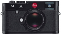

器材库 > 35mm画幅可换镜头数码相机 > M

规格总览
产品类型
35mm画幅可换镜头数码相机
发布日期
2012-09-17
厂家推荐价格
6,950.00 （美元）
影像规格
影像传感器
CMOS
影像传感器尺寸
23.9 x 35.8mm
总像素
2400万
有效像素
2400万
色彩滤镜
RGBG
最大解像度
5952 x 3976
静态图像尺寸
5952 x 3976 ,4256 x 2823,2976 x 1984,1600 x 1080
静态图像格式
JPEG, RAW, RAW+JPEG, DNG
静态图像质量
标准，精细
画幅比
3:2
短片尺寸
1920×1080分辨率25p/24p
短片格式
Motion-JPEG
短片音效
内置麦克风为单声道
镜头和对焦
镜头卡口
Leica M
对焦模式
MF
手动对焦
支持
曝光控制
测光系统
Center-biased TTL
测光模式
中央重点测光, 多分区评价测光, 点测光
快门速度
1/4000 - 60秒
曝光补偿
±3EV以1/3EV级调整
ISO感光度
200, 320, 400, 640, 800, 1000, 1250, 1600, 2000, 6400, 自动, 250, 500, 2500, 可扩展至100
白平衡
日光, 白炽灯, 闪光灯, 阴天, 自定义, 阴影, 预设白平衡, 手动, 荧光灯（冷白色）, 荧光灯（暖白色）
自拍
12秒, 2秒
连拍
2 fps
闪光灯
内置闪光灯
无
闪光补偿
±3EV以0.3EV级调整
外接闪光灯
SCA-3502
取景器/显示屏
取景器
光学取景器
取景放大倍率
0.68倍
LCD尺寸
3.0英寸
LCD像素
92万
Live View
有
文件输入/输出
存储卡
SD/SDHC, SDXC
数据接口
USB2.0
电源
电池
可充电锂电池(7.4V 1800mAh)
机身规格
颜色
黑色, 灰色
尺寸
139×80×42mm
重量
680g
其它
配件端口
热靴
禾土车2014-03-07 01:494.81 分
操作性 5.00功能性 5.00美观性 5.00趣味性 4.50耐用性 5.00性价比 4.50解像力 5.00色彩还原 4.50
怕鱼的猫2013-04-13 18:42
做人要厚道200506062012-11-28 00:25
做人要厚道200506062012-11-28 00:11
产品图 / 样片
Leica M
评测 / 相关文章
- 详细内容 （存档）
- ［试用］Leica M【行成于思】 （存档）
- ［试用］海外评测：福伦达NOKTON 50/1.5 （存档）
- ［试用］为我的M盖座房 （存档）
- ［资讯］TIPA Award 2013 揭晓 （存档）
- ［试用］旁轴新旗舰 徕卡M海外评测 （存档）
- ［试用］徕卡M9与徕卡新M同场景对比测试 （存档）
- ［资讯］Leica M 官方样片欣赏 （存档）
- ［资讯］徕卡携M、S系列新品亮相Photokina 2012 （存档）
相关文章
- ［试用］Leica M【行成于思】 （存档）
- ［试用］海外评测：福伦达NOKTON 50/1.5 （存档）
- ［试用］为我的M盖座房 （存档）
- ［资讯］TIPA Award 2013 揭晓 （存档）
- ［试用］旁轴新旗舰 徕卡M海外评测 （存档）
- ［试用］徕卡M9与徕卡新M同场景对比测试 （存档）
- ［资讯］Leica M 官方样片欣赏 （存档）
- ［资讯］徕卡M （存档）
- ［资讯］徕卡携M、S系列新品亮相Photokina 2012 （存档）
- ［资讯］徕卡M红色限量款发售 （存档）
- ［试用］王者荣耀 徕卡大M+APO大战索尼A7II+Loxia （原站已下线）
- ［影像］感受精彩世界之徕卡篇 （存档）
- ［资讯］免费更换 徕卡召回部分M系列相机锂电池 （存档）
- ［行情］老婆给了五万块 购买器材真叫爽 （存档）